State management in SPA
- No framework (Imperative)
- Pattern based frameworks
Pattern based frameworks
- MVC - Backbone JS
- MV* - Angular JS, Ember Js etc...
- Flux - Reflux, Redux, Vue Js (Vuex), Mobx etc...
Backbone JS

Angular JS
- Using $rootScope
- Using angular factory

Flux

Why Flux?
- Application state is messy
- Unidirectional data makes for easy debugging
Redux
Redux is a predictable state container for JavaScript apps.
Why Redux?
- Single source of truth
- State is read-only
- Changes are made with pure functions called REDUCERS
- It is tiny (2kB, including dependencies)
Redux has no relation to React!
You can write Redux apps with React, Angular, Ember, jQuery, or vanilla JavaScript.
That said, Redux works especially well with libraries like React
Redux way of working

Let's design a TODO Application
In Angular JSLet's design a TODO Application
InSTEP 1: Define your application state.
In Redux, all the application state is stored as a single object.
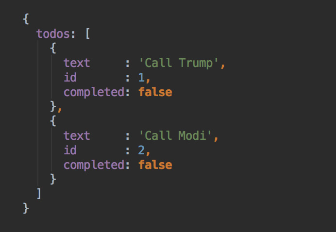STEP 1: Define your application state.
In Redux, all the application state is stored as a single object.
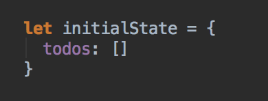STEP 2: Define actions
Actions are payloads of information that send data from your application to your store.
// Action object
{
type: "UNIQUE_ACTION_IDENTIFIER",
payload: {}
}
STEP 2: Define actions
Action constants
// app/actions/todo.js
const ADD_TODO = 'ADD_TODO'
const TOGGLE_TODO = 'TOGGLE_TODO'
STEP 2: Define actions
Action creators
// app/actions/todo.js
export const ADD_TODO = 'ADD_TODO'
export const TOGGLE_TODO = 'TOGGLE_TODO'
export function addTodo(text) {
return {
type : ADD_TODO,
payload: {text}
}
}
export function toggleTodo(id) {
return {
type : TOGGLE_TODO,
payload: {id}
}
}
STEP 3: Define reducers
Reducers specify how the application's state changes in response to actions sent to the store
Basic Principle
(state, action) => newState
STEP 3: Define reducers
Writing a reducer
// app/reducers/todo.js
export function todoReducer(state, action) {
return state
}
STEP 3: Define reducers
Registering reducer to application state
let initialState = {
key1: {foo: "bar"},
key2: {baz: "test"},
key3 {bar: "foo"}
}
import {combineReducers} from "redux"
import {reducer1} from "../reducer1"
import {reducer2} from "../reducer2"
import {reducer3} from "../reducer3"
return combineReducers({
key1: reducer1,
key2: reducer2,
key3: reducer3
})
STEP 3: Define reducers
Registering reducer to application state
let initialState = {
todos: []
}
// app/reducers/index.js
import {combineReducers} from "redux"
import {todoReducer} from "../reducers/todo.js"
return combineReducers({
todos: todoReducer
})
Writing logic in the reducer
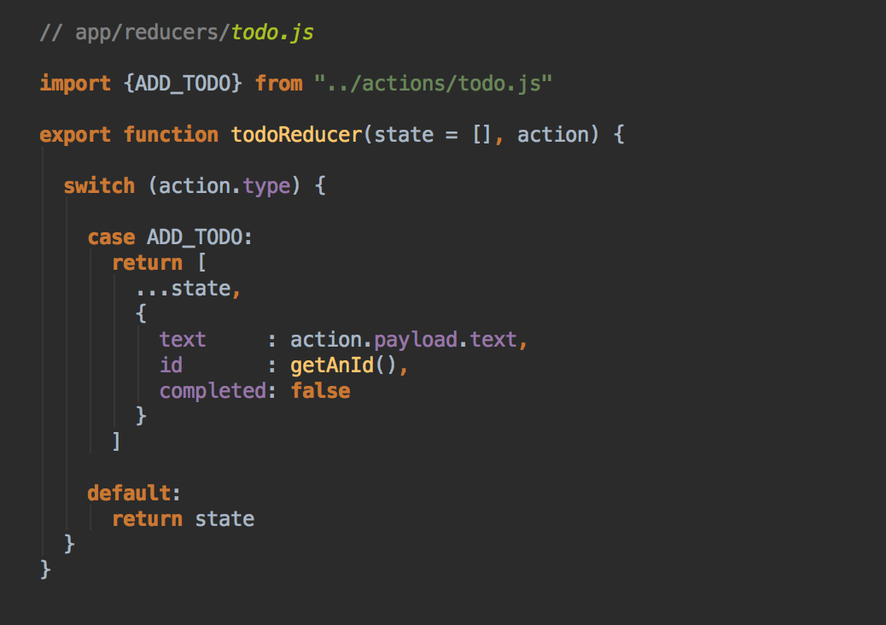Writing a reducer
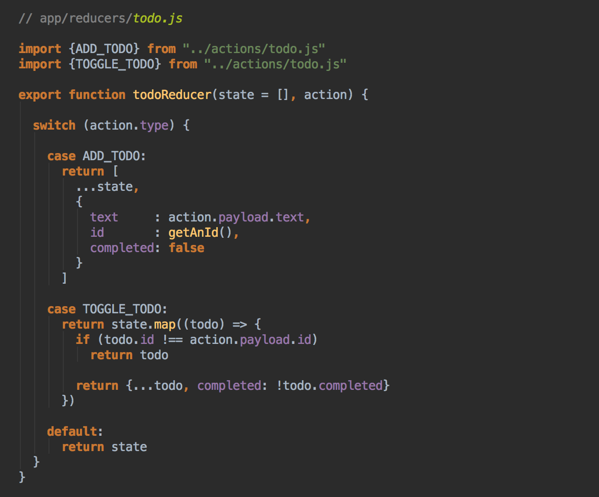Dispatching Actions
import {addTodo} from "../actions/todo";
import {store} from "../store"
// Dispatch add todo action
store.dispatch(addTodo("Create a Redux App"))
// Updated redux state
{
todos: [
{
text : "Create a Redux App",
id : 1,
completed: false
}
]
}
Dispatching Actions
import {toggleTodo} from "../actions/todo";
import {store} from "../store"
// Dispatch add todo action
store.dispatch(toggleTodo(1))
// Updated redux state
{
todos: [
{
text : "Create a Redux App",
id : 1,
completed: true
}
]
}
That's all
Connecting Redux with React

Let's design the view layer
Views can be categorized in to two types
- Presentational components
- Container components
TodoList component

Todo component

Container components
Container components are also React components
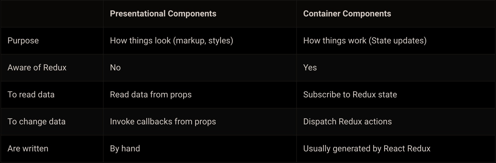Where do container components fit
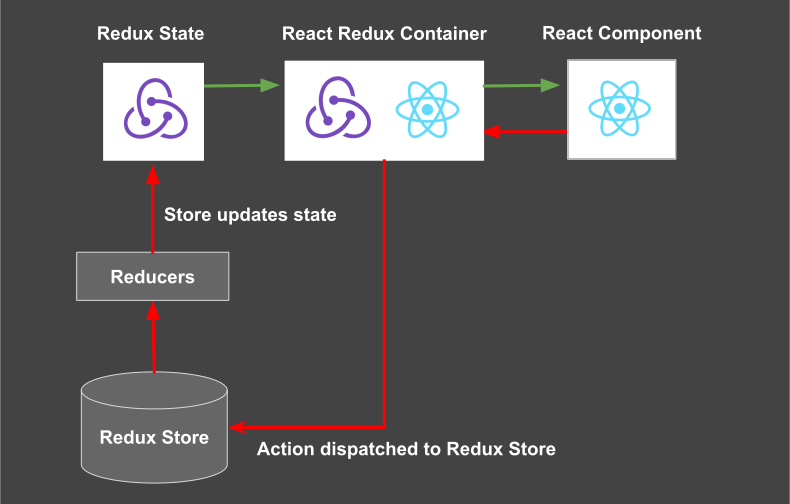TodoList Container

TodoList Container
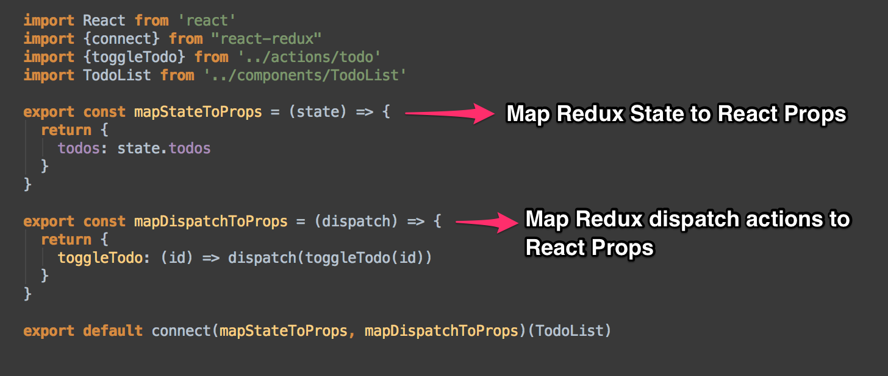TodoList Container
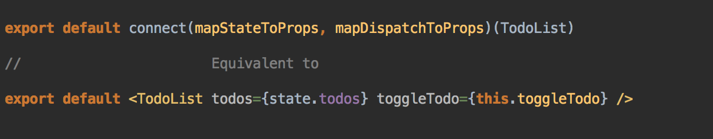Rendering a Container component
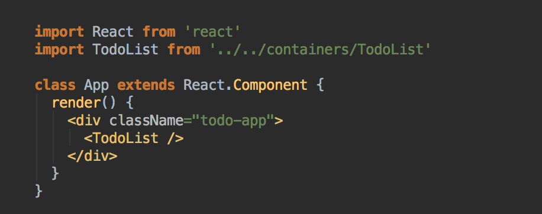Connecting the dots
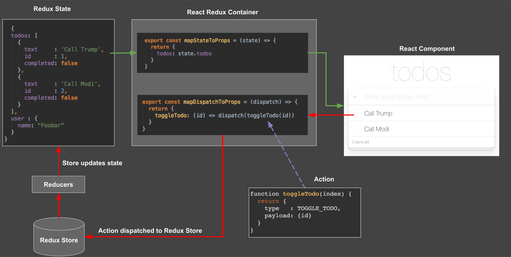Connecting the dots
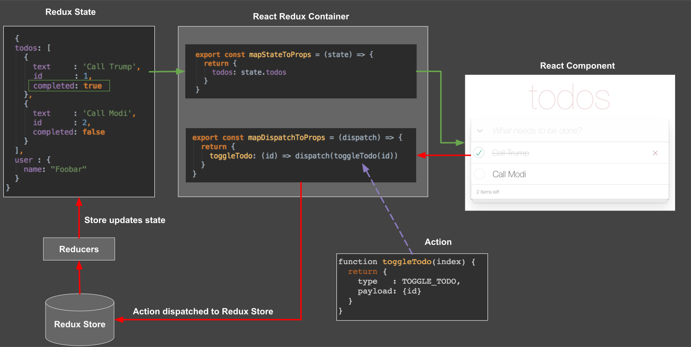Exercise time!
React Redux Scaffolding
Redux Loop
Redux Loop
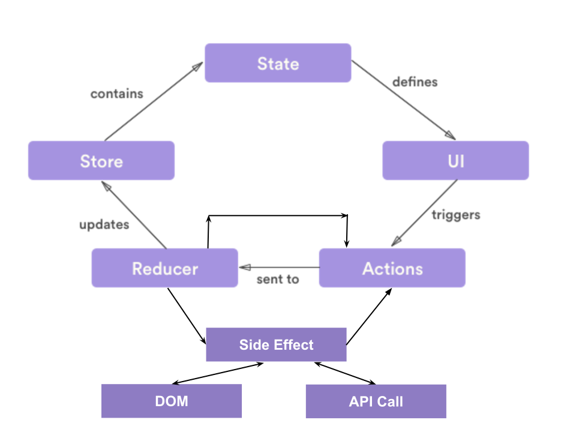Q & A
Return to agenda